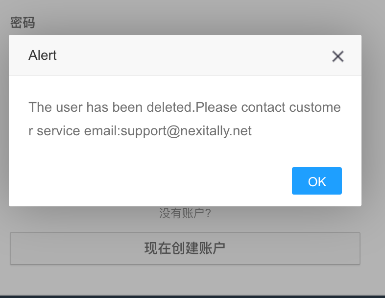

奶昔🥤
@realNyarime
继昨日这位博主的“奶昔机场”号被封一天，今日号直接被删除了，这些机场主真的玻璃心！前阵子被清退后用起了腾讯云香港直连，卖那么贵还不让人说
顺带一提，Nexitally与“奶昔”这俩是咋关联起来的，论域名naixi(.net)在我手上，那naixi(.com)还在ename喊我要不18w收了。结果还拉一群人说我蹭这sb机场热度，寻思我已经叫这名字5年之久
总之，我不知道这种翻墙需求，在AI时代下已经能做到自己动手丰衣足食了，却有不少人选择万人骑节点。昨晚也有个机场主急了说我蹭热度，论这年头你不顺便开个AI中转站真对不起你自己

lifcc
@mylifcc
昨天吐槽了一下奶昔机场，今天号就消失了。。 https://t.co/Mv2JnCYhSq https://t.co/dmiUclTFty